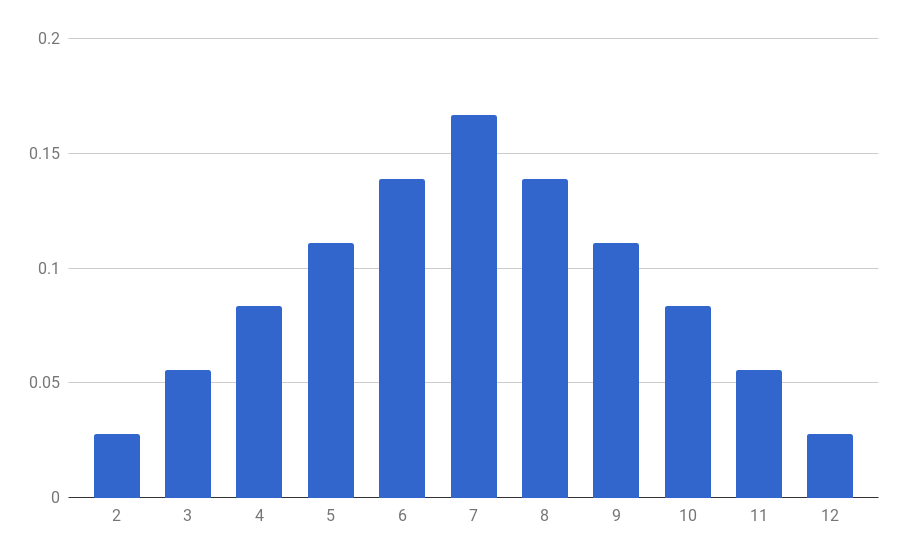

Jusqu'ici nous avons parlé d'ensembles (univers, événements). Il est donc naturel de construire des fonctions entre espaces probabilisables, c'est la notion de variable aléatoire. Cela est notamment utile quand on calcule une quantité qui dépend du résultat d'une expérience aléatoire (vos gains à un jeu de pile de face, somme des valeurs deux dés, etc).
Variable aléatoire
Soient $(\Omega, \mathcal{A})$ et $(E, \mathcal{E})$ des espaces probabilisables. Une variable aléatoire sur $\Omega$ à valeurs dans $E$ est une fonction $X : \Omega \longmapsto E$ telle que pour tout événement $B \in \mathcal{E}$, on a
Pour alléger les notations, l'événement $X^{-1}(B)$ sera noté $\set{X \in B}$. Dans le cas où $B = \set{b}$, on notera même $X^{-1}(\{b\}) = \set{X = b}$.
Moralement, on peut penser à $X$ comme un nombre qui est tiré au hasard. Dans la plupart des exemples que l'on considère dans ce cours, l'ensemble $\Omega$ est fini, et la tribu $\mathcal{A}$ est l'ensemble $\mathcal{P}(\Omega)$ de toutes les partie de $\Omega$. Dans ce cas, on peut oublier la condition $X^{-1}(B) \in \mathcal{A}$, qui sera automatiquement vérifiée.
Pile je gagne, face tu perds
On joue à pile ou face, le joueur lance une pièce de monnnaie, si elle tombe sur pile, il gagne 1€, sinon il perd 1€. L'univers associé à cette expérience aléatoire est $\Omega = \set{\pile, \face}$. On peut définit sur $\Omega$ la variable aléatoire $X : \Omega \to \set{-1,1}$ qui représente les gains du joueur, en posant
$$X(\pile) = 1, \qquad X(\face) = -1$$
Somme de deux dés
On lance deux dés, on note $S$ la variable aléatoire qui représente la somme des valeurs des dés.
Formellement, l'univers de notre expérience est $\Omega = \ints{1,6}^2$ Cela veut dire qu'on considère la fonction $S : \Omega \to \N$ définie pour $\omega = (x,y) \in \Omega$ par
$$S(\omega) = x + y$$
Le Scrabble
On joue au scrabble, on tire une lettre au sort dans le sachet. On note $V$ la variable aléatoire qui représente la valeur en point de la lettre (en français).
Formellement, on a donc $\Omega = \set{A, B, C, \ldots, Y, Z, \text{joker}}$, et $V(A) = 1$, $V(B) = 3$, $V(C) = 3$, $V(D) = 2$, …, $V(Z) = 10$ et $V(\text{joker}) = 0$ (voir ici pour la liste complète).
Temps d'arrêt
On lance une pièce jusqu'à ce qu'on fasse pile. On note $N$ la variable aléatoire qui représente le nombre de lancers qu'on a fait (et on pose $N = +\infty$ dans l'éventualité où on ne tombe jamais sur pile).
Variable discrète, réelle
Si l'ensemble $E$ des valeurs d'une variable aléatoire est fini ou dénombrable, on dira que la variable est discrète. Si $E = \R$ on parlera d'une variable aléatoire réelle. Pour des raisons de simplicité, on étudiera principalement les variables aléatoires discrètes.
Loi d'une variable aléatoire
Loi d'une variable aléatoire
Soit $(\Omega, \mathcal{A}, \P)$ un espace probabilisé, $(E, \mathcal{E})$ un espace probabilisable, et $X : \Omega \to E$ une variable aléatoire sur $\Omega$ à valeurs dans $E$. Alors la fonction
$$\begin{align*}
\P_X : \mathcal{E} & \longmapsto [0,1] \\
\qquad B & \longmapsto \P(X \in B)
\end{align*}$$
est une probabilité sur l'espace probabilisable $(E, \mathcal{E})$, appelée loi de la variable $X$.
Loi d'une variable aléatoire discrète
Dans le cas d'une variable aléatoire discrète, la loi de $X$ est entièrement déterminée par les valeurs $\P(X = e)$ pour $e \in E$. En effet, si $B \in \mathcal{E}$, alors on peut calculer $\P(X \in B)$ avec la formule :
$$\P(X \in B) = \sum_{b \in B} \P(X = b)$$
Les déplacements au Monopoly
On joue (sans tricher) au Monopoly. On lance deux dés, on note $S$ la variable aléatoire qui représente la somme des valeurs des dés. Au chapitre précédent, on a calculé $\P(X = 7) = \frac{1}{6}$ et $\P(X = 5) = \frac{1}{9}$. Plus généralement, on peut calculer que pour $2 \le k \le 12$, on a
$$\P(S = k) = \frac{6 - |k-7|}{36}$$
On peut mettre résumer dans un tableau
$k$
2
3
4
5
6
7
8
9
10
11
12
$\P(S = k)$
$\frac{1}{36}$
$\frac{2}{36}$
$\frac{3}{36}$
$\frac{4}{36}$
$\frac{5}{36}$
$\frac{6}{36}$
$\frac{5}{36}$
$\frac{4}{36}$
$\frac{3}{36}$
$\frac{2}{36}$
$\frac{1}{36}$
On peut visualiser le résultat par un histogramme

Histogramme représentant la loi de la somme de deux dés
Score au Scrabble
On reprend l'exemple du jeu de Scrabble et du tirage d'une lettre dans le sachet. On considère la variable aléatoire $V$ qui désigne sa valeur en points. On a $\set{V = 0} = \set{\text{joker}}$, donc $\P(V = 0) = \frac{1}{27}$. On a $\set{V = 1} = \set{A, E, I, L, N, O, R, S, T, U}$, donc $\P(V = 1) = \frac{10}{27}$ … $\P(V = 10) = \frac{5}{27}$
$k$
0
1
2
3
4
5
6
7
8
9
10
$P(V = k)$
$\frac{1}{27}$
$\frac{10}{27}$
$\frac{3}{27}$
$\frac{3}{27}$
$\frac{3}{27}$
$0$
$0$
$0$
$\frac{2}{27}$
$0$
$\frac{5}{27}$
Ce qui ne semble suivre aucune règle claire, il y a fort à parier que les concepteurs du jeu ont choisi ces scores de manière un peu arbitraire.
Temps nécessaire pour faire un 6
On lance un dé. Tant qu'on ne fait pas 6, on recommence. On considère la variable aléatoire $N$ qui désigne le nombre de lancers qu'on fait (et on considère que $N = +\infty$ si on ne fait jamais $6$). On calcule alors pour tout $k \in \N$,
ce qui décroit géométriquement vers 0 (il est de de plus improbable de faire des longues séquences sans 6), et on a $\P(N = +\infty) = 0$.
Loi d'une variable réelle
Dans le cas d'une variable aléatoire réelle $X$, la loi de $X$ peut être caractérisée par la fonction $F_X : x \mapsto \P(X \le x)$, qu'on appelle la fonction de répartition de $X$.
Fonction de répartition, densité
Soit $(\Omega, \mathcal{A}, \P)$ un espace probabilisé et $X : \Omega \to \R$ une variable aléatoire réelle. On appelle fonction de répartition de $X$, la fonction réelle $F_X : \R \to [0,1]$ définie pour $x \in \R$ par
$$F_X(x) = \P(X \le x)$$
Si la fonction $F_X$ est $\mathcal{C}^1$, on dit que la variable $X$ admet une densité. On appelle alors densité de probabilité la fonction $p_x : \R \to \R$ dérivée de $F_X$ :